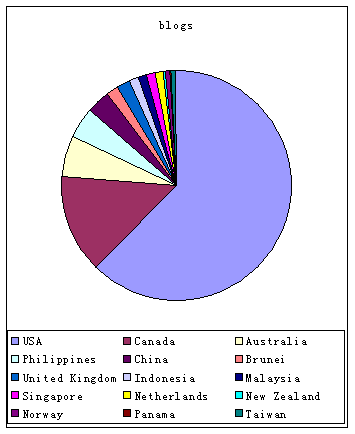

在等待被饭碗志接纳的时候，顺便浏览了一下这个网站，发现有按国家（地区）分类的列表显示，于是把祖籍为大陆的中国人（以下简称中国人）的网志列表计17页全抓回来，作了一个简单统计，发现一些有趣的结果。
至8月7日20点（北京时间），共有222个中国人网志被饭碗志收录。
网志的主人现居住地共分布在16个国家或地区，其中美国138人占62%。
一时查不到资料，由于网志是年轻人的事物，所以感觉好象这个分布与中国学生留学国家的分布有正相关。另外还有一个非常有趣的现象，就是分布统计符合20－80规律，人数最多的20%的国家或地区有82%的网志，其余80%的国家或地区拥有18%的网志。具体见下表。
在饭碗志登录网志的时候，要求上传主人的一张照片。从某方面讲，网志是个人展示平台。由于中国人有含蓄的传统，是不是每个人都会将自己的容颜与自己的文字一并展示大家看呢？由统计看来，有27个人上传了与自己长相无关的卡通图片或其它图片，有20个人上传了部分真正的长相（如面部的一部分、幼时的图片、有意模糊不可辨的照片、照片底片及手工画像等，根据这些很难将他从人群分出），两者累计有占总人数的21%，即大约有1/5的人仍不想将自己的长相展示给众人。（这个说法可能有点牵强，一些人可能上传是网志的图片，也有一些人虽然没传照片但可能有自己的photolog）。这些数据也可以从另一个角度分析，就是在国外居住的中国人，其思想的开放程度和对当地文化的认同程度已经很高，有近80%的人可以勇敢地展示自己的容貌和思想了。
从网志的URL分析，这222个网志分布在143个二级域名上，超过拥有blog数量超过1个18个，如下表，全部列表可从这里下载(excel格式)。由此可见，并没有一个blog服务器站点在争取用户方面占有绝对优势，再就是个人注册域名所占比重也当不少。
| country/area | blogs |
|---|---|
| USA | 138 |
| Canada | 31 |
| Australia | 13 |
| Philippines | 10 |
| China | 7 |
| Brunei | 4 |
| United Kingdom | 4 |
| Indonesia | 3 |
| Malaysia | 3 |
| Singapore | 3 |
| Netherlands | 2 |
| New Zealand | 1 |
| Norway | 1 |
| Panama | 1 |
| Taiwan | 1 |
| websites | blogs |
|---|---|
| xanga.com | 20 |
| blogspot.com | 14 |
| livejournal.com | 13 |
| diaryland.com | 9 |
| geocities.com | 8 |
| diary-x.com | 4 |
| tripod.com | 4 |
| angelfire.com | 3 |
| cjb.net | 3 |
| pitas.com | 3 |
| angel-goddess.net | 2 |
| darkpoetria.net | 2 |
| digitalrice.com | 2 |
| drew.ph | 2 |
| elusive-wish.net | 2 |
| fade-away.org | 2 |
| upsaid.com | 2 |
| wusze.com | 2 |
果酱果酱！
Posted by: Hilton at August 8, 2003 03:21 PMHilton真是一个严谨认真的人啊
Posted by: keke at August 8, 2003 08:41 AM